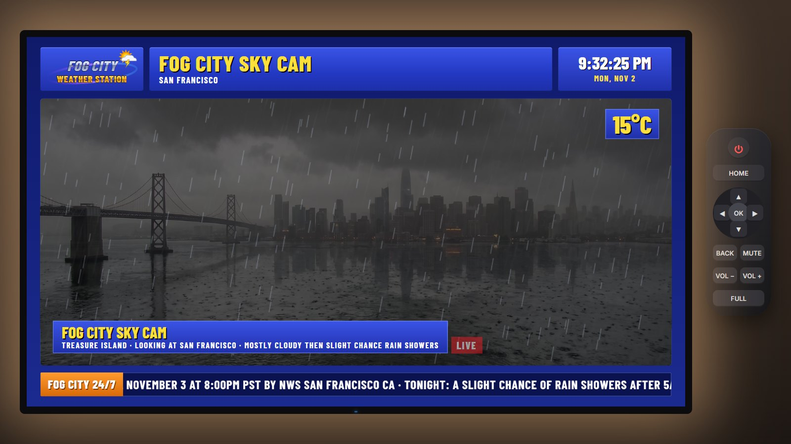
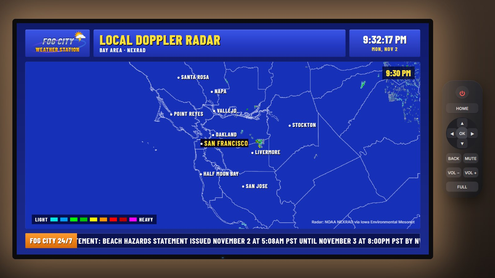
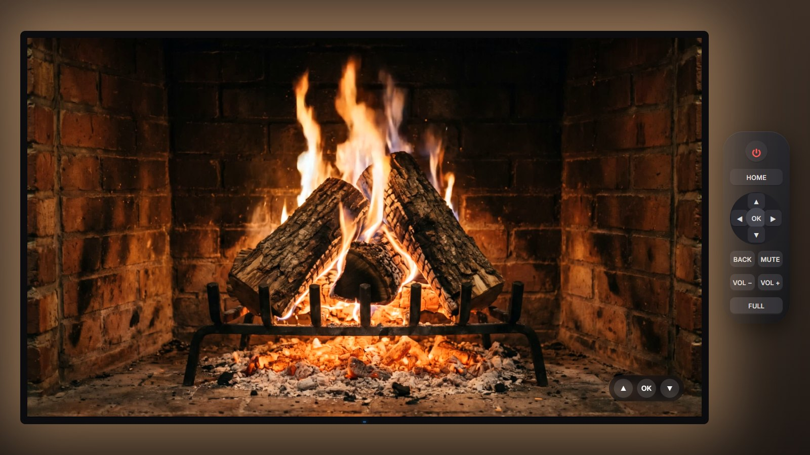
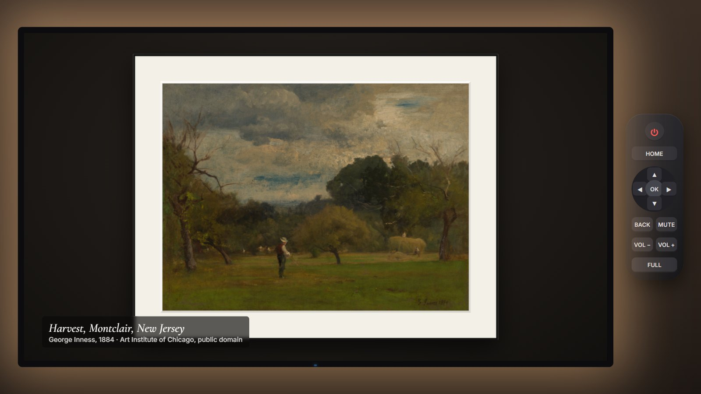
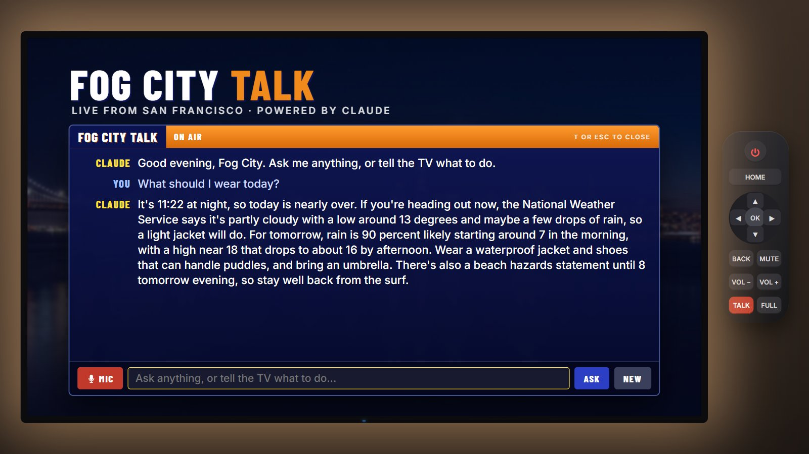
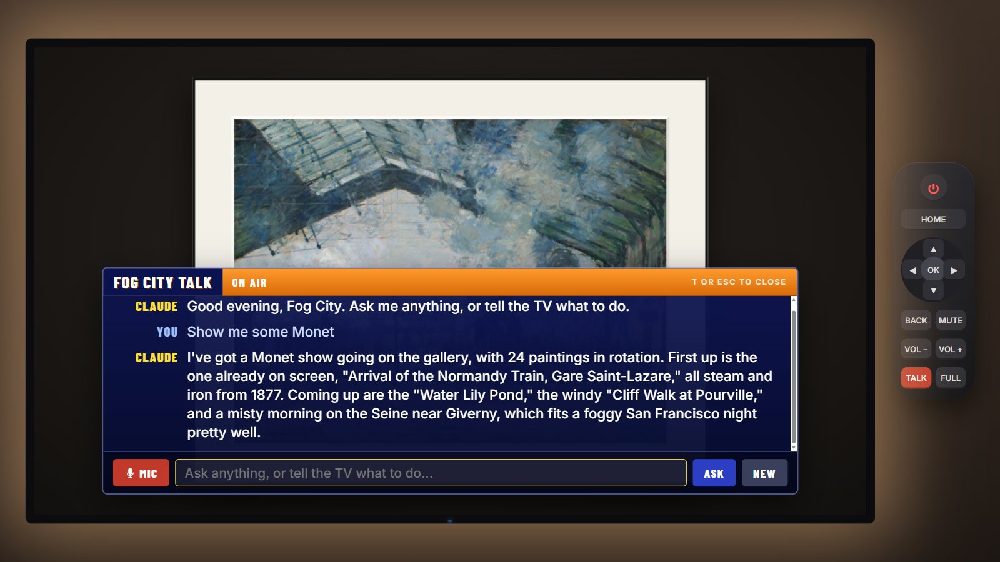

The big picture
A static web page draws a TV. Three channels need only free public data. The fourth talks to Claude through a small proxy that holds the API key.
Timeline: from the first prompt to the Worker
Everything happened in conversation with Claude Code on the web, in early November 2026. The laptop was attached later for files and for running commands.
The first prompt
The spark was Tristen O'Brien's YouTube video, in which he used Claude to build custom Android TV apps: a 90s weather channel, an art gallery, a fireplace and a Claude chat channel. The ask was to build the same kind of channels without an Android TV, as a simulated TV in a web page.
Research and a plan
Each data source was checked for terms, keys, rate limits and whether a browser may call it directly (CORS). One early question was whether a Claude subscription could power a TV channel. It can't: third-party apps must use an API key. So the subscription was used only to build the app, and the Claude channel was postponed.
Studying the look
YouTube is blocked from the cloud sandbox, so the video was downloaded on the laptop with
yt-dlpand cut into contact sheets withffmpegto study each channel's style.Generating the media with fal
Photoreal sky-cam stills (one camera view, six weather states) and a fireplace video were generated through Claude's fal connector, for about $3.10. Section 5 explains the techniques.
Building and testing
The shell, router, weather, gallery and fireplace modules were written. Playwright drove a headless browser twice, once with fake data and once with the network cut off, and the screenshots exposed layout bugs to fix.
First live run on the laptop
Real browsers found what the sandbox couldn't: the museum refused requests from
localhost, and the downtown weather station reports no pressure or wind. Both were fixed.Rename and publish
The working name was replaced with Fog City TV, the city switched from New York to San Francisco and Celsius, and the site went to GitHub with GitHub Pages.
Reversal: add the Claude channel
A $100 API promo credit (expiring 11 November 2026) made a Claude channel worth doing. The rule from the start: the API key never goes in the page or the repo.
The proxy, the tool loop and cost tuning
server.pybecame the local server plus a key-holding proxy, andworker/worker.jsits cloud twin. Claude got five tools to run the TV plus web search. Tests ran first against a fake Claude, then live on the laptop. A newer web search tool turned out to use 2.7 times the tokens, so the plain one was kept.Docs, real screenshots, first merge
Real answers were captured as screenshots for the README, a gallery race condition was fixed, and pull request #1 was merged.
Cloudflare Worker
From the laptop,
wranglerlogged in to Cloudflare (it took three tries; see the unknown unknowns), created a KV namespace for the daily cap, registered theaz9713.workers.devsubdomain, deployed the Worker and stored the key and a passcode as secrets. Four tests passed: right origin and passcode gives 200, no passcode 401, wrong origin 403, and a real question got an answer.Public site goes live
Pull request #2 pointed
js/config.jsat the Worker and madelocalhostalways use the local proxy. After the merge, GitHub Pages rebuilt and the public TV can talk, behind the passcode.
Tech stack
Deliberately small: the browser already ships a graphics engine, an audio synthesizer and a speech engine.
| Layer | Technology | Role here |
|---|---|---|
| Markup and layout | HTML5, CSS3 (grid, flexbox, transforms, filters, keyframe animations) | The room, the TV bezel, every channel layout, most animation |
| Logic | JavaScript ES modules, loaded natively by the browser | Router, channels, data fetching, the Claude tool loop |
| 2D drawing | Canvas 2D, inline SVG | Pixel-art weather icons, rain and fog particles, the logo |
| Video | HTML <video>, H.264 MP4 | The fireplace loop, crossfaded between two players |
| Audio | Web Audio API | Generative jazz, fire crackle, UI sounds. No audio files. |
| Speech | Web Speech API: speechSynthesis and SpeechRecognition | The weather announcer, Claude's voice, and voice input |
| Storage | localStorage | Gallery settings, the passcode on each device, cached museum lists |
| Local server | Python 3 standard library (http.server, urllib, json) | Serves the site and proxies /api/claude on the laptop |
| Edge proxy | Cloudflare Workers (V8 isolates), Workers KV | Holds the key for the public site, checks origin and passcode, daily cap |
| Hosting | GitHub Pages | Serves the static site from the main branch |
| AI at run time | Claude API (Messages API), model claude-opus-5-5 | Fog City Talk |
| AI at build time | Claude Code (writing the code), fal (Nano Banana Pro, Kling 3.0 Pro, Wan 3.0) | Code, photos and video |
| Testing | Playwright with Chromium, Node.js | End-to-end tests with fake, offline and live data |
Every dependency
"Dependency" means four different things here, and only the first list matters to a visitor.
1. Needed to watch the TV
- A modern browser. Chrome or Edge for voice input; Firefox works for everything but the microphone.
- Google Fonts: Barlow Condensed, Cormorant Garamond, Inter (Open Font License).
- Network access to NWS, IEM and AIC for live data. Without it the TV falls back to sample weather and local photos.
- For Fog City Talk on the public site: the Worker, and the passcode.
npm packages none. CDN scripts none.
2. Needed to run it at home
- Python 3 (any recent version).
start.batrunspython server.py. Standard library only, so nopip install. - A file named
.anthropic_keynext toserver.pyfor the Claude channel. Git ignores it. - Why a server at all: browsers refuse to load JavaScript modules from
file://pages.
3. Needed to develop it
- Git, and a GitHub account.
- Node.js 18 or later and Playwright, for
tests/run.js. - ffmpeg, to re-encode video and resize images.
- yt-dlp, only for studying a reference video.
- Wrangler (Cloudflare's command-line tool), run with
npx wrangler, so nothing is installed globally.
4. Services and accounts
- GitHub (code and Pages hosting): free.
- Cloudflare (Worker and KV): free plan.
- Claude Console (API key, workspace with a $20 monthly spend limit): pay per token.
- fal (media generation, build time only): about $3.10 of a $10 credit.
- Claude subscription (Claude Code, used to write everything).
Files and what each one does
| File | Lines | Job |
|---|---|---|
index.html | 58 | The TV frame, power screen and on-screen remote |
styles.css | 262 | Every look and most of the animation |
js/app.js | 157 | Stage scaling, router, remote keys, shared audio graph, on-screen display |
js/weather.js | 496 | Weather station: NWS data, segments, radar, sky cam, crawl, announcer |
js/icons.js | 125 | Animated pixel-art weather icons and the text-to-icon classifier |
js/jazz.js | 158 | The generative smooth-jazz engine |
js/gallery.js | 260 | Museum search, frames and mats, night dimming, settings |
js/fireplace.js | 165 | Seamless video loop, procedural crackle, sleep timer |
js/home.js | 58 | The launcher screen |
js/talk.js | 354 | Fog City Talk: overlay, voice, the Claude tool loop, TV tools |
js/util.js, js/config.js | 61 | Location, storage, fetch with timeout, sun position; the Worker address |
server.py | 153 | Local static server plus the Claude proxy |
worker/worker.js, worker/wrangler.toml | 90 | The Cloudflare Worker and its deploy settings (no secrets) |
tests/run.js | 108 | Playwright end-to-end test |
How the graphics and animation were made
Three sources: hand-written CSS and SVG, procedural drawing in Canvas, and AI-generated photos and video. No image editor was used.
One fixed 1920 x 1080 stage
Every channel is laid out in TV pixels on a 1920 x 1080 box, and app.js scales that box with a CSS transform: scale() to fit the window. That is why the TV looks the same on a phone and a 4K monitor, and why no layout needed responsive breakpoints.
Pure CSS animation
@keyframes animation on clip-path: inset() and opacity, like an old tube warming up.cubic-bezier(.2,.9,.2,1)) over 2.2 seconds.Procedural drawing in JavaScript
image-rendering: pixelated so they stay crisp. Sun rays rotate, rain falls, clouds drift and lightning flickers; at night the sun becomes a moon. A small classifier turns NWS text such as "Slight Chance Rain Showers" into one of nine icon types.requestAnimationFrame at the screen's refresh rate.weather.js.AI-generated photos and video (fal)
<video> players then hand over 0.6 seconds before the end, one fading in as the other fades out. Wan 3.0 made a comparison clip; Kling's loop point matched better.



Sound: synthesized, never recorded
There is not one audio file in the repo. Everything is generated live by the Web Audio API.
set_volume tool turns that master knob.speechSynthesis, which uses the voices installed in your operating system (for example Microsoft David or Zira on Windows). That's why the voice differs between computers.External APIs, SDKs and libraries
Every external call, who runs it, and whether it needs a key.
| Service | Used for | Key? | Called from |
|---|---|---|---|
National Weather Service api.weather.gov | Current conditions from the four nearest stations, forecast in Celsius, alerts | No | Browser |
| Iowa Environmental Mesonet (Iowa State University) | NEXRAD radar tiles for the last hour, county and state lines | No | Browser |
| Art Institute of Chicago API and IIIF image server | Searching public-domain paintings and fetching the images | No | Browser |
| Google Fonts | Typefaces | No | Browser |
| Claude API (Messages API) | Fog City Talk answers, tool calls, web search | Yes | The proxy only |
Claude web search tool web_search_20250305 | News, streaming and other fresh facts, at most 2 searches a question | Same key | Runs inside Anthropic |
| Browser speech services | Speech-to-text behind SpeechRecognition (Google for Chrome, Microsoft for Edge) | No | Browser |
| Cloudflare Workers and KV | The public proxy and its daily counter | Account | Cloudflare's network |
| fal | Media generation, at build time only | Connector | Claude, during development |
urllib in Python, fetch in the Worker) because the proxy only forwards one kind of request and the project wanted zero packages to install. In a bigger app, the SDK gives you typed responses, retries, streaming helpers and a ready-made tool loop.Libraries: none at run time. The only third-party code is in development: Playwright for tests, and Wrangler for deploying the Worker.
The Claude channel in one diagram
The page never holds the key. Claude never touches the page directly; it asks, and the page acts.
claude-opus-5-5, a 2,048-token answer cap, low effort for quick replies, only custom tools accepted from the page, web search added by the proxy with at most 2 uses, and server-side fallback if a safety classifier declines. A tampered page can't buy a pricier model or longer answers.switch_channel, set_sleep_timer, show_art, set_volume and get_forecast. The system prompt also tells Claude the time, the channel, the latest weather and which painting is on screen, so "who painted this?" works.

The full mechanics, including the append-only conversation and every stop reason, are in section 10 of the Markdown notes.
How Cloudflare works, and what the Worker does
Cloudflare runs one of the world's largest networks of data centres in front of other people's websites. Workers lets you run your own small program on that network.
The mental model
fog-city-talk.az9713.workers.dev is routed (by anycast: the same IP address announced from everywhere) to the nearest one, and the Worker runs there.The pieces this project uses
| Piece | What it is | Here |
|---|---|---|
| Worker | Your code, one fetch(request, env) function | worker/worker.js, named fog-city-talk |
| workers.dev subdomain | A free address under Cloudflare's domain, chosen once per account | az9713.workers.dev |
| Variables | Plain settings, visible in the dashboard and in wrangler.toml | ALLOWED_ORIGIN = the Pages address, DAILY_LIMIT = 200 |
| Secrets | Encrypted settings. Once set, nobody can read them back, not even you; you can only replace them. | ANTHROPIC_API_KEY, PASSCODE |
| KV namespace | A global key-value store, fast to read and eventually consistent | USAGE: one counter per day |
| Wrangler | The command-line tool that logs in, deploys and sets secrets | Run from the laptop with npx wrangler |
One request, step by step
- The TV page on
az9713.github.iosends a POST with the conversation and anx-passcodeheader. - Because the Worker is on a different domain, the browser first sends an
OPTIONS"preflight" asking permission. The Worker answers 204 with the CORS headers that allow only the Pages origin. - The Worker checks the
Originheader (403 if it's another site), that its secrets exist (503), and the passcode (401). - It reads today's counter from KV, refuses with 429 at 200 requests, and writes the counter plus one.
- It rebuilds the request with the fixed model and limits, adds the key from
env.ANTHROPIC_API_KEY, and calls the Claude API. - It streams Claude's answer straight back to the page with the CORS header attached.
How it was set up
npx wrangler login # browser opens; click Authorize within ~2 minutes
npx wrangler kv namespace create USAGE # prints the id that goes in wrangler.toml
npx wrangler deploy # first deploy registers the workers.dev subdomain
npx wrangler secret put ANTHROPIC_API_KEY
npx wrangler secret put PASSCODEThen js/config.js got the Worker address. The address is not a secret: without the passcode, and outside the Pages origin, the Worker refuses.
Free-plan limits worth knowing
| Limit | Free plan | Effect here |
|---|---|---|
| Worker requests | 100,000 a day | Far above the 200-a-day cap |
| CPU per request | 10 ms, network waiting excluded | The Worker does almost no computing |
| KV reads | 100,000 a day | One per request |
| KV writes | 1,000 a day; 1 a second to the same key | One per request, so the 200 cap stays well inside |
| KV visibility | Changes can take 60 seconds or more to reach other locations | The daily cap is approximate, not exact (see below) |
Figures from Cloudflare's Workers limits, KV limits and How KV works pages, read 3 November 2026.
Unknown unknowns
Things an experienced engineer from another field would not think to ask, each of which mattered in this build.
Everything sent to a browser is public
Any key in a web page, however hidden or minified, can be read with the browser's developer tools in seconds. The only safe place for a key is a server you control.
The key lives only in .anthropic_key on the laptop and as a Cloudflare secret. The page talks to a proxy instead.
CORS protects users, not servers
CORS is a rule browsers enforce on web pages. A script like curl ignores it and can fake any Origin header. So an origin check stops other websites from using your proxy, but not a determined person.
The passcode is the real lock. The origin check and the daily cap are extra fences.
Git remembers forever
A secret committed once stays in the history even after you delete the file, and public GitHub repos are scanned by bots within minutes. Rotating the key is the only real fix.
.gitignore lists .anthropic_key, .talk_passcode, .env and .wrangler/, and they were checked with git status after cloning.
Spend limits are your real seatbelt
Code bugs and leaks happen. A dollar cap at the provider is the one control that holds even when everything else fails.
A Console workspace with a $20 monthly limit, plus 200 requests a day at the Worker and 300 at the local server.
OAuth logins leave a door open
Clicking Authorize for a command-line tool grants it a long-lived token with the listed permissions, stored on that computer.
Wrangler stays logged in on the laptop with 30 permissions. Revoke it under My Profile, Access Management, Connected Applications in Cloudflare when you no longer deploy.
A 403 often looks like a CORS error
When a server refuses a request, its error page usually lacks CORS headers, so the browser reports "blocked by CORS policy" and hides the real reason.
The museum's Cloudflare rejected requests whose Referer was localhost. One line fixed it: <meta name="referrer" content="no-referrer">.
Browsers won't make sound until you touch the page
Autoplay policies block audio until a user gesture such as a click or key press.
Pressing Power is that gesture, and it unlocks the shared audio graph for every channel.
JavaScript modules need a web server
Double-clicking an HTML file opens it as file://, and browsers refuse to load ES modules from there.
That's why start.bat runs a tiny local server instead of opening the file.
Bots get treated differently
Sites behind bot protection often block headless browsers and unusual user agents, so automated tests can pass while real use fails, or the reverse.
Museum screenshots had to be taken in a visible browser window.
Speech recognition is a cloud service
The browser's microphone API sends your audio to Google (Chrome) or Microsoft (Edge) for transcription. Firefox doesn't offer it.
The talk box always has a typing field as well as the mic.
Race conditions happen in UIs too
Two image loads started in order can finish out of order, and the slower one wins the screen.
"Show me some Monet" briefly showed a different painting. Each request now gets a sequence number, and stale images are dropped.
A merge is not instantly live
GitHub Pages rebuilds after each push to main, which takes a minute or two, and its CDN plus your browser may keep the old file for several minutes more.
After a change, wait a few minutes and do a hard refresh (Ctrl+F5).
New addresses need a moment for HTTPS
A freshly created subdomain has no TLS certificate yet, so the first requests fail with a certificate error.
The new workers.dev address started answering about three minutes after the first deploy.
"Eventually consistent" means counters drift
KV copies data to many locations lazily. Two requests in different cities can both read 199 and both write 200. KV is fine for settings and caches, not for exact counts or money.
The daily cap is a soft brake. Exact counting would need a Durable Object or Cloudflare's rate-limiting binding.
Shells change your bytes
Piping text in PowerShell can add a byte-order mark or a trailing newline. For a secret, one invisible character means a mismatch.
The first passcode upload didn't match the file and the test got 401. Re-uploading with a raw byte pipe fixed both secrets.
Login windows time out
Command-line OAuth starts a tiny local web server and waits a minute or two for the browser to call back. Click late, or click an old tab, and you see "localhost refused to connect".
It took three tries. Be signed in to the dashboard first, then click Authorize (not "Allow") right away.
Sandboxes have their own firewalls
Cloud coding environments block many hosts and may block running code downloaded from the internet.
YouTube, fal's CDN and the Claude API were blocked from the cloud sandbox, so those steps ran on the laptop through a remote session.
Copies drift
A folder copied out of a repo stops getting updates and quietly falls behind.
The laptop's original web-tv folder was a day old and not a git folder, so a proper clone was made next to it.
A subscription is not an API
A Claude Pro or Max plan covers Anthropic's own apps and Claude Code. Any app you build must use an API key, billed per token.
The subscription wrote the code; a separate key with promo credit pays for the channel.
The API has no memory
Each call resends the whole conversation, so the 20th question costs more than the first. Long chats get expensive quietly.
History is capped at 40 messages, and NEW starts fresh.
Tools can cost more than words
Search results are long, and Claude reads all of them as input tokens. Smarter tools can make more round trips.
A news question cost 13,413 input tokens with the plain search tool and 36,041 with the newer filtering one.
Prompt caching exists
When the start of a request (system prompt, tools, early history) repeats, the API can cache it, and cached reads are billed at a small fraction of normal input. It needs a cache_control marker and a minimum prompt length.
Not used yet. It becomes worthwhile as conversations grow and is a good next optimization.
Models refuse, pause and split answers
A reply can stop for a tool call, pause mid-search, decline, or arrive split into several text blocks around citations. Code that only reads the first block will drop words.
Every stop reason is handled and all text blocks are joined.
Credits expire
Promotional API credit has an end date, and unused credit doesn't roll over.
This credit expires on 11 November 2026, so watch Usage in the Console.
What broke, and the fix
| Symptom | Cause | Fix |
|---|---|---|
| Gallery empty in a real browser | Museum refused localhost referers with 403 | no-referrer meta tag |
| Pressure and wind showed N/A | The nearest station doesn't report them | Fill each field from the next of four nearest stations |
| "THI" in the extended forecast | Day names cut to three letters | Map "This Afternoon" and "Tonight" to TODAY |
| Lightning washed out the whole TV | Flash layer covered the full screen | Confine it to the sky-cam panel |
| Wrong painting after "show me Monet" | Slower seasonal image loaded last | Sequence numbers on image loads |
| A search question cost 16 cents | Filtering search tool made 5 model turns | Plain search tool, at most 2 searches |
| Cloudflare login timed out twice | The Authorize click came too late, or on an old tab | Sign in first, then click within the window |
| Deploy failed | Account had no workers.dev subdomain | Registered az9713 |
| Worker returned 401 with the right passcode | PowerShell pipe altered the secret's bytes | Re-upload through a raw byte pipe |
| Laptop would have called the Worker and been refused | Config pointed every page at the Worker | localhost always uses the local proxy |
What it cost
| Item | Cost |
|---|---|
| Writing the code (Claude Code, within an existing subscription) | No extra charge |
| Media: 8 images and 2 videos on fal | About $3.10 |
| Weather, radar and museum data | $0 |
| Hosting: GitHub Pages and the Cloudflare free plan | $0 |
| Fog City Talk: a TV command (Claude Opus 5.5 at $4 / $20 per million input / output tokens) | Under 2 cents |
| Fog City Talk: a question needing web search (includes $0.01 per search) | About 7 cents |
Where to go next
PLACE in js/util.js and regenerate the six sky-cam states with the same edit-one-base-image trick.